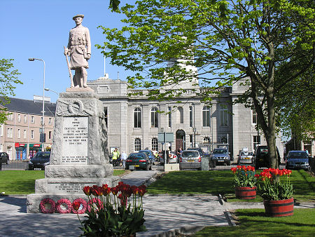

Visit Inverurie (Inbhir Uraidh)
Inverurie is a wonderfull town situated in the north east of scotland. Year on year this town just keeps growing and growing.
The people who live there are all so friendly! There is plenty going for this town including:
- A busy town centre with plenty of shops
- Many bars, restaraunts and cafes offering a wide selection of different cuisines
- Plenty of parks and walking routes
- Activities such as bowling, trampolining and swimming

Below is a map of Inverurie
Transport Access
Visiting Inverurie is so easy! With both a train station and many bus stops all around the town you will certianly find your way here wherever you live.
Visit Scotrail for informaiton about trains and booking and Stagecoach for busses.